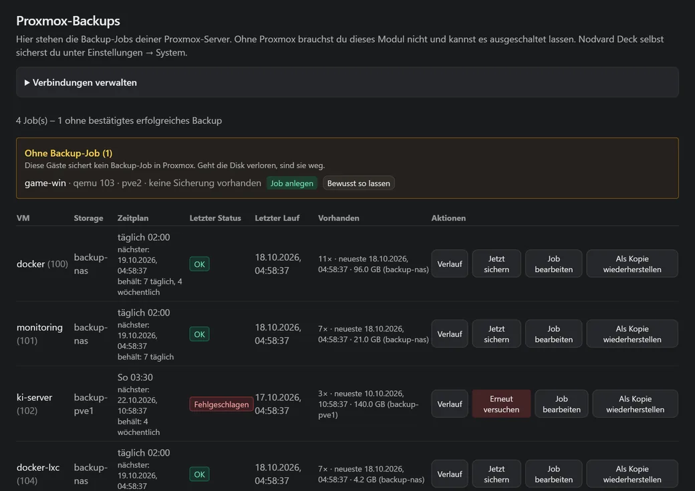

Proxmox-Backups überwachen
Ein Backup-Job, der still ausfällt, fällt oft erst auf, wenn du die Sicherung brauchst. Nodvard Deck zeigt dir alle Proxmox-Backups in einer Liste und meldet sich, wenn ein Lauf fehlschlägt oder eine Sicherung zu alt wird.

Was Deck zeigt
- Alle Backup-Jobs deiner Proxmox-Server mit Zeitplan und letztem Lauf.
- Die vorhandenen Sicherungen je Gast.
- Gäste, die in keinem Job stecken, und fehlgeschlagene Läufe. Beides steht oben.
Wann sich Deck meldet
- Lauf fehlgeschlagen: Du bekommst eine Meldung, und eine weitere, sobald es wieder klappt. Gemeldet wird nur, wenn sich etwas ändert, nicht bei jeder Prüfung.
- Backup zu alt: Ist die letzte erfolgreiche Sicherung einer VM oder eines Containers älter als eine Frist, meldet Deck es einmal. Die Frist stellst du ein, ab Werk sind es 3 Tage. Läuft ein Job seltener, gilt der Abstand aus seinem Zeitplan. So fällt auch auf, wenn nichts fehlschlägt, weil der Job gelöscht oder abgeschaltet ist.
- Test-VMs: Für VMs und Container, die nie gemeldet werden sollen, trägst du eine Ausnahme ein.
Die Meldungen kommen in Deck an und auf Wunsch aufs Handy, über ntfy, Telegram, Discord oder einen der anderen Kanäle. In einem Wartungsfenster landen sie nur im Verlauf, ohne Push.
So richtest du es ein
- Schalte das Modul Proxmox-Backups ein.
- Öffne die Seite Proxmox und wähle „Mit Passwort verbinden“. Dafür brauchst du Admin-Rechte in Deck.
- Gib die Adresse deines Proxmox ein und vergleiche den Fingerabdruck des Zertifikats mit dem in Proxmox.
- Trag Benutzer und Passwort eines Proxmox-Administrators ein, meist
root@pam, und lass „Auch Proxmox-Backups verbinden“ an.
Das Passwort braucht Deck nur für diese eine Anmeldung. Danach legt es in Proxmox einen eigenen Benutzer mit API-Token für die Backups an und vergisst das Passwort. Wählst du „Nur ansehen“, kann Deck nur lesen. Wie das genau läuft und welche Rechte der Zugang bekommt, steht in der Anleitung zum Proxmox-Token.
Was du von Deck aus tun kannst
Mit „Ansehen und steuern“ startest du ein Backup sofort oder versuchst einen Lauf erneut. Du legst Backup-Jobs an und änderst sie. Und du stellst eine Sicherung als Kopie wieder her, das Original bleibt dabei unberührt. Jede dieser Aktionen läuft über eine Freigabe und steht im Protokoll.
Was Deck nicht macht
- Deck sichert deine VMs und Container nicht selbst. Die Sicherungen macht Proxmox, Deck zeigt, ob sie laufen.
- Eine Sicherung im selben Speicher wie das Original schützt nicht vor dem Ausfall dieses Speichers. Und ein Backup, das du nie zurückgespielt hast, ist ungetestet. Probier die Wiederherstellung als Kopie einmal aus.
Weiterlesen
Mehr zu Proxmox und Docker in Deck steht unter Proxmox und Docker in einem Dashboard. Wie du Deck selbst sicherst, erklärt die Anleitung Sicherungen auf ein NAS oder NFS.
Probier es mit Beispieldaten aus
Installiert ist Deck in drei Befehlen, und die Beispieldaten zeigen dir alles, bevor deine eigenen Server dazukommen.